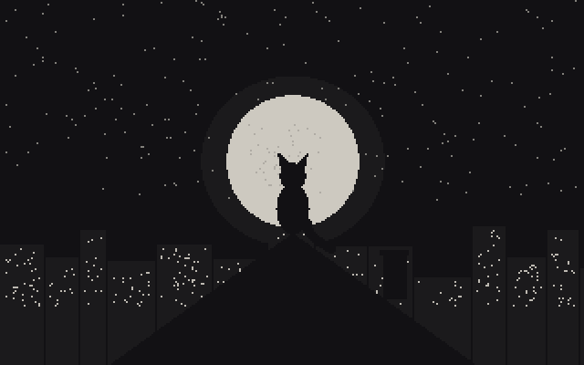
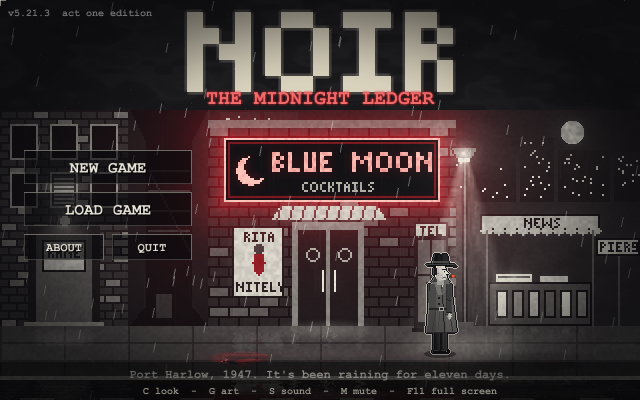

Release 4Act One · browser, phone & Windows · Release 1 kept to compare
Port Harlow, 1947. Your partner was fished out of the harbor - and he couldn't swim. A Sierra-style point-and-click detective story in black, white and one shade of red.
Another case is waiting
somewhere in the rain.
More games to come.
Nine Lives Software makes old-fashioned adventure games: puzzles, deductions, honest deaths and second chances. Every picture, note and word in our games is generated in code. Games designed by Pieter De Villiers, made with the assistance of Claude.